Temporal Challenges
2008
The inhabitants of the Chaco live at the mercy of the weather, with many months of parching drought followed by months of rain turning roads into lakes. The Nivaclé at Mistolar recount the 1996 experience of one of their own. Juan Jose Tamayo and his wife set out on a journey of a few miles with their daughter, Carmen. The day grew unexpectedly hot and the family ran out of water. Eventually Juan collapsed. His wife had no option but to continue with their daughter in search of water. After her mother collapsed, Carmen walked on alone for some distance. All three bodies were later recovered by others.
WATER
Historically, most of the Nivaclé were sustained by the Pilcomayo River, where Mistolar rose to prominence.
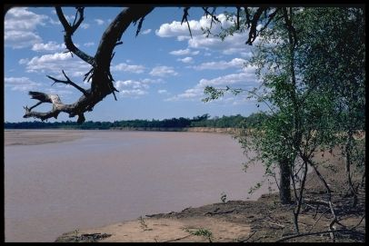
In the migrations to the Mennonite colonies, Mistolar was eventually abandoned, then repopulated in 1980. That settlement (which we call the first Mistolar) was buried by the river when it changed course in 1984. The second Mistolar was built some distance away, but in 1986 it was literally split in two by the river changing course again.
The current Mistolar sits on still higher ground and seems secure enough, but it’s located 3 miles from the river, too far to reach easily on foot. Even worse, the river itself has split in two: the main Pilcomayo 10 miles away in Argentina which flows all year round, and the much smaller branch in Paraguay which is stagnant and swampy for most of the year. Although it can sustain some animals (like this crocodile sunning itself at the site of the second Mistolar) the Nivaclé can no longer fish there nor safely drink from it.
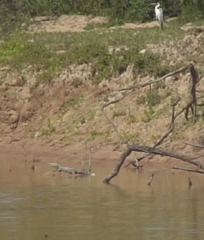
Most well water in the Chaco is too salty to drink. Such a well is used in Mistolar today mainly for feeding animals. The water can be pumped out by hand, or pumped by motor and stored in this tank when the generator has fuel to run.
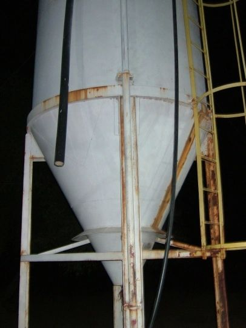
This well is now completely out of commission because of a broken shaft.
For drinking, Mistolar relies on rain water collected from the chapel's metal roof and stored in underground cisterns.
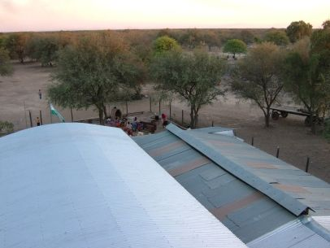
But given the current prolonged drought, the cisterns ran dry some time ago. The people had been hauling in drinking water with their tractor and trailer from many miles away, but now they’ve run out of fuel. All of this actually forced them to make preparations to abandon Mistolar and set up camp near the stagnant riverbed. In such extremities, deaths can be expected. Fortunately, the first heavy rain of the season arrived on November 24 and filled the cisterns.
The water situation in La Abundancia (which has over twice the population of Mistolar) is much more favorable. Its chapel and cisterns are larger, and every house has its own rain collection system and cistern (provided by the Church).
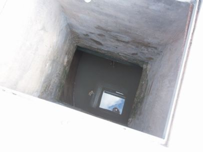
Even these can run dry in prolonged droughts, but since Abundancia is located so close to the Transchaco Route, trucks can readily refill them. The water may be gray, but it’s much better than nothing.
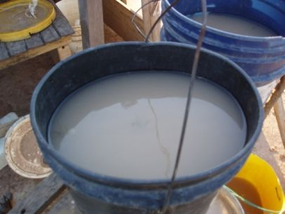
FOOD
Water shortages lead to food shortages. Here is one of the most productive gardens in Mistolar. Can you spot the batata plants?
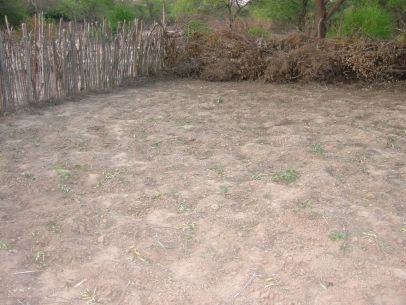
Gardens have to be watered by hand, fenced in, and guarded through the night from marauding biscachas.
The land around Mistolar still supports limited foraging for traditional foods like honey and algarrobo. And Mistolar maintains a decent herd of livestock (90 cows and many more goats). The protein helps make up for the lack of fish.
In contrast, Abundancia’s tiny grazing pasture supports very few cattle. The government sporadically provides school lunch for the children, seen brewing here in the school kitchen beneath a tree.
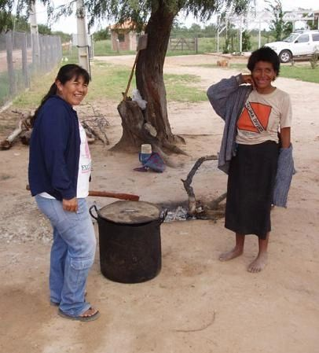
During hard times this may be the only meal some children will eat in a day.
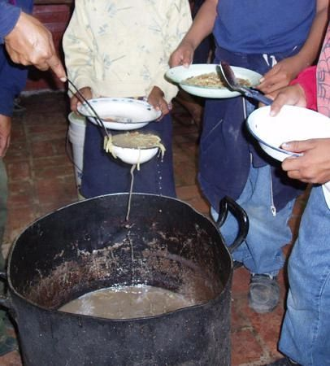
Food at home is cooked over simple campfires like this one.
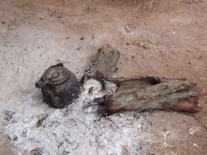
Firewood for cooking has become very scarce in Abundancia.
This dog attests to the absence of scraps or leftovers.
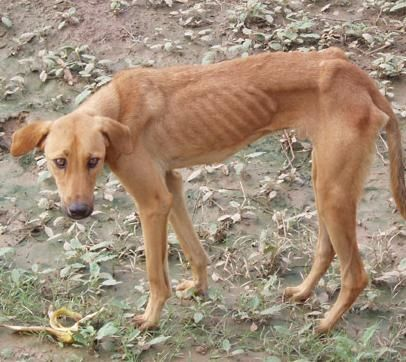
SHELTER
The houses themselves have improved markedly over the years. This was one of the finer huts in Mistolar in 1980, with tree trunk frame and thatched walls and roof.
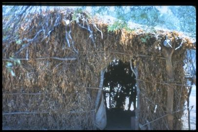
Today most of the houses in Mistolar are larger and feature metal roofs. Many of the walls are made of crude bricks, or wood and adobe, or even metal sheeting.
In Abundancia all 54 houses have excellent metal roofs, supported by sturdy concrete beams, with gutters and pipes for collecting rain water.
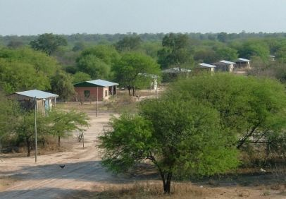
Many of their walls are solid as well, but many others are simply missing, or built out of any available material, such as the plastic packaging seen here.
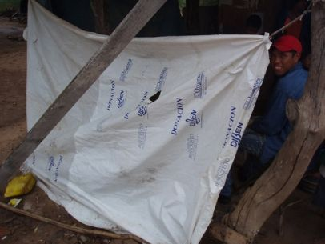
Few houses offer much protection from the bitter cold that sweeps through the Chaco on winter nights.
HEALTH
Exposure to the elements, plus the problems with food and water, all take their toll on the health of the Nivaclé. Here is a family latrine.
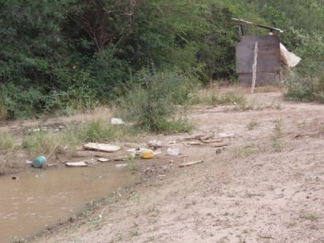
With heavy rains the latrines overflow into the yard and street, spreading diseases like hook worms to the children who play there.
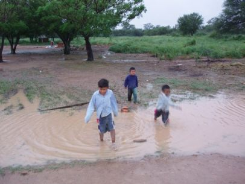
Skin infections are common.
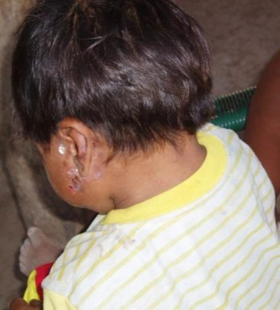
Infant mortality among the Nivaclé is shockingly high, according to the best available estimates. Kurt Mayberry (a practicing physician in Rexburg, Idaho) explains: “There is a 30% infant mortality rate in the Chaco. There is also a high maternal mortality rate although I do not have the numbers and it is much lower. Women’s health like pre-natal and post-natal care is largely ignored. After a baby is born the mothers are encouraged to take the baby to the hospital within the first week to have it checked out. Few do this and many die before even being checked. Many of the health providers are men and so women’s health issues are largely ignored. Villages have ‘midwives’ but they have no formal training. In fact, the typical method of birth is to dig a hole and the mother squats over the hole and when the baby comes out it lands in the hole.”
Those living in Mistolar have no practical access to medical care at all. Abundancia does have a beautiful health center, shown here, but it’s currently unstaffed.
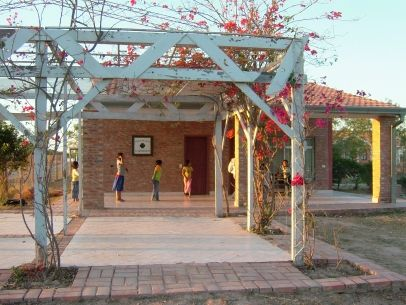
Since Abundancia lies in the region of the central Mennonite colonies, ambulances exist and have picked up people from Abundancia in cases of emergency. But they don’t provide rides back to the village. There have also been cases where health care was denied to inhabitants of Abundancia because of their religion.
MOBILITY
The central colonies have plenty of decent roads, but towns are widely spread out, and the Nivaclé of Abundancia have no cars and precious few motorcycles for getting around. Plant spines in the Chaco are tough enough to deflate heavy tires on SUVs, so bicycle tires don’t last long at all. This bike’s tire has been completely removed.
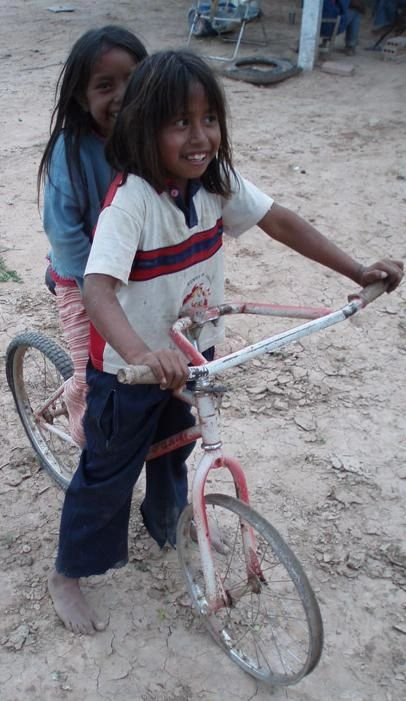
Mistolar’s single tractor has been a literal lifesaver, when it had fuel.
EDUCATION
In Mistolar, local teachers provide classes in the chapel through the 6th grade, and would like to expand up through the 9th. In Abundancia, locals and Latinos teach classes through the 9th grade in the building that used to be the chapel.
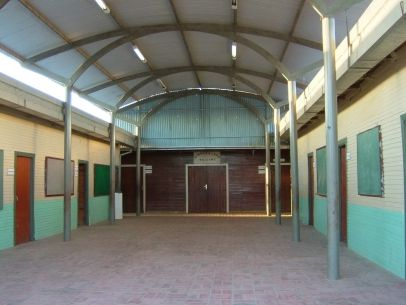
They plan to offer through the 12th grade in the school addition that the Nivaclé Foundation is funding.
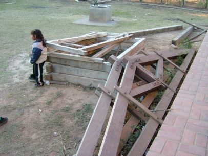
But many students become discouraged and drop out because they and their families see little opportunity for further advancement in education or jobs. Inexpensive vocational schools exist in the central colonies, but they remain unaffordable and out of reach for most from Abundancia, and nearly impossible to reach from Mistolar.
EMPLOYMENT
Apart from the salary provided by the government to school teachers, there are no regular paying jobs near Mistolar. Many families have moved across the border to Potrillo where work is available.
Abundancia has greater access to paying jobs, but transportation remains a limiting factor. Most of the work is seasonal labor on the farms of neighboring Mennonites. These women are harvesting sesame.
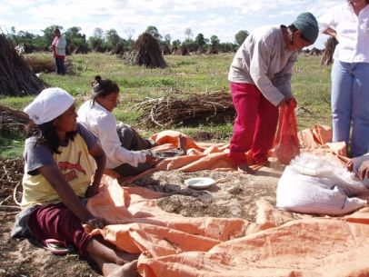
The church has built a very fine bakery at Abundancia. Here is the oven.
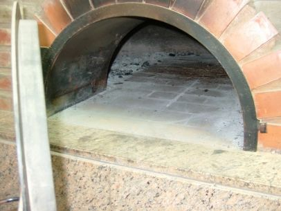
Unfortunately the bakery has never managed to stay in operation for long. It’s hard to turn away hungry members of the community who ask for bread on credit. Then when the credit is never repaid the bakery can’t restock the flour. Experience with accounting and running small businesses is sorely lacking. The long-term view falls to the wayside in the face of dire short-term needs.
DIASPORA
Over the decades, the settlers of Mistolar and their children have migrated to many other communities besides La Abundancia, making converts along the way even without full-time missionaries. Several families now live in Campo Ampú, where good water is available but food is scarce. The 14 LDS Nivaclé families in Potrillo have access to jobs and health care, but still lack Argentine residency.
The descendants of Mistolar will continue intermixing with the greater Nivaclé population, now numbered at around 15,000.
IMPROVEMENT
The Church has given the Nivaclé much assistance, and the Nivaclé Foundation has attempted to address many of the remaining problems. But the greatest challenge of all is to provide aid in a way that leads to self-sufficiency without creating dependencies. Handouts tend to hurt rather than help over the long run. Fostering self-reliance among the Nivaclé requires ongoing engagement and instruction, which demand time and attention, so there are never enough volunteers for the work at hand.